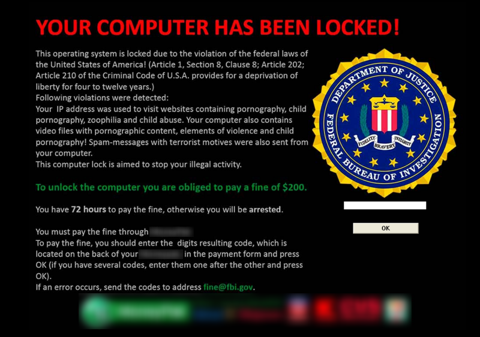
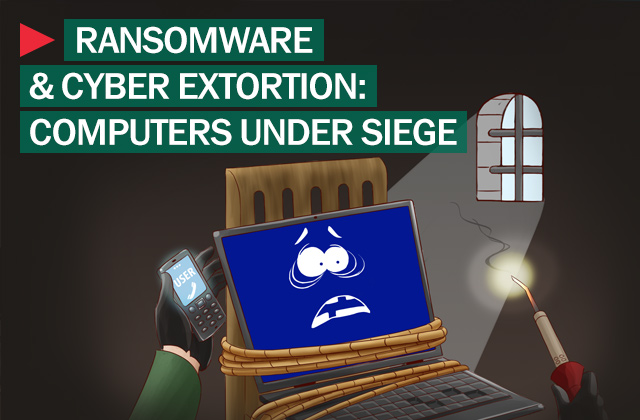

Ransomware is a type of malware that restricts access to a computer system that it infects in some way, and demands that the user pay a ransom to the operators of the malware to remove the restriction.
Some forms of ransomware systematically encrypt files on the system's hard drive (cryptoviral extortion, a threat originally envisioned by Adam Young and Moti Yung) using a large key that may be technologically infeasible to breach without paying the ransom, while some may simply lock the system and display messages intended to coax the user into paying. Ransomware typically propagates as a trojan, whose payload is disguised as a seemingly legitimate file.

While initially popular in Russia, the use of ransomware scams has grown internationally; in June 2013, security software vendor McAfee released data showing that it had collected over 250,000 unique samples of ransomware in the first quarter of 2013—more than double the number it had obtained in the first quarter of 2012.
Wide-ranging attacks involving encryption-based ransomware began to increase through trojans such as CryptoLocker, which had procured an estimated US$3 million before it was taken down by authorities, and Cryptowall, which has procured an estimated $15 million as of June 2015.
Ransomware typically propagates as a trojan, entering a system through, for example, a downloaded file or a vulnerability in a network service. The program then runs a payload.
Payloads vary, with the simplest simply displaying a fake warning notice. Such scareware-based ransomware display notices that imitate those issued by companies or law enforcement agencies and falsely claim that the system has been used for illegal activities, or contains illegal content such as pornography and pirated software or media. Some ransomware payloads imitate product activation notices, falsely claiming that a computer's installation is counterfeit or requires re-activation.

A second type of payload is in the form of an application designed to lock or restrict the system until payment is made, typically by setting the Windows Shell to itself, or even modifying the master boot record and/or partition table to prevent the operating system from booting until it is repaired.
The most sophisticated payloads encrypt files, with many using strong encryption to encrypt the victim's files in such a way that only the malware author has the needed decryption key.
Payment is generally always the goal, and the victim is coerced into paying to remove the ransomware, either by supplying a program that can decrypt the files, or by sending an unlock code that undoes the payload's changes. A key element in making ransomware work for the attacker is a convenient untraceable payment system. A range of such payment methods have been used, including: wire transfer, premium-rate text messages,[15] online payment voucher service such as Ukash or Paysafecard, - and most recently, the digital currency Bitcoin.